AA1: POLITON E.I.R.L. — José Manuel Guzmán Valverde
AA1 · DINÁMICA DEL PLAN CONTABLE · IES CERTUS · POLITON E.I.R.L. · «Soluciones digitales para partidos políticos» · Identificación de cuentas de los elementos 1, 2, 3 y 4 a partir del asiento de apertura · Guzmán Valverde, Jose Manuel · TEJEDA TERREROS, Alejandro Jordan · MONTOYA Diaz, Mateo · CIERTO Saenz, Dylan · JAUREGUI CARRANZA, Aldair · RUC 20615999696 · Octubre 2026 · Ver el informe completo (PDF) ↗ · Abrir el libro diario (Excel) ↗
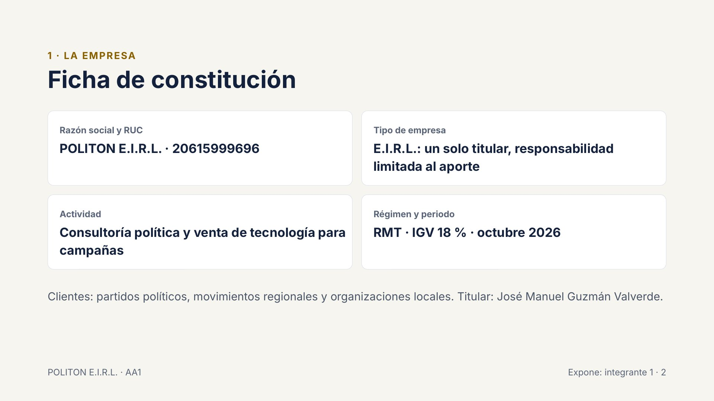
1 · LA EMPRESA · Ficha de constitución · Razón social y RUC · POLITON E.I.R.L. · 20615999696 · Tipo de empresa · E.I.R.L.: un solo titular, responsabilidad limitada al aporte · Actividad · Consultoría política y venta de tecnología para campañas · Régimen y periodo · RMT · IGV 18 % · octubre 2026 · Clientes: partidos políticos, movimientos regionales y organizaciones locales. Titular: José Manuel Guzmán Valverde. · POLITON E.I.R.L. · AA1 · Expone: integrante 1 · 2
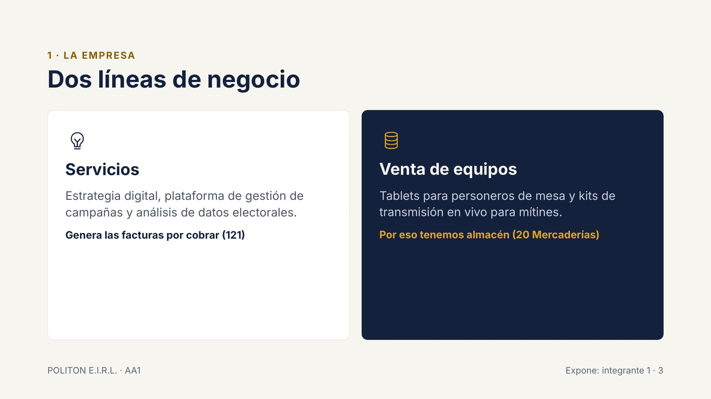
1 · LA EMPRESA · Dos líneas de negocio · Servicios · Estrategia digital, plataforma de gestión de campañas y análisis de datos electorales. · Genera las facturas por cobrar (121) · Venta de equipos · Tablets para personeros de mesa y kits de transmisión en vivo para mítines. · Por eso tenemos almacén (20 Mercaderías) · POLITON E.I.R.L. · AA1 · Expone: integrante 1 · 3
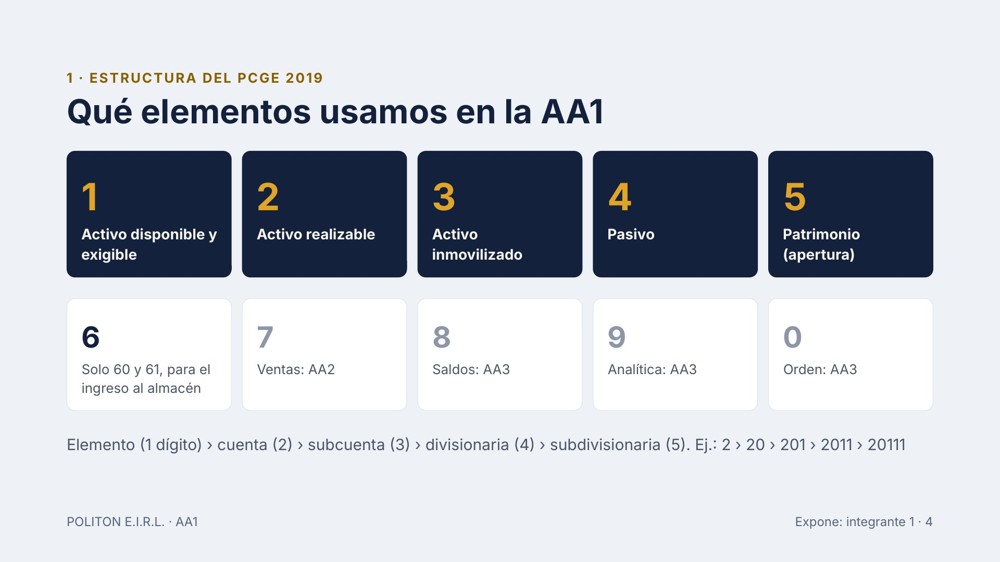
1 · ESTRUCTURA DEL PCGE 2019 · Qué elementos usamos en la AA1 · 1 · Activo disponible y exigible · 2 · Activo realizable · 3 · Activo inmovilizado · 4 · Pasivo · 5 · Patrimonio (apertura) · 6 · Solo 60 y 61, para el ingreso al almacén · 7 · Ventas: AA2 · 8 · Saldos: AA3 · 9 · Analítica: AA3 · 0 · Orden: AA3 · Elemento (1 dígito) › cuenta (2) › subcuenta (3) › divisionaria (4) › subdivisionaria (5). Ej.: 2 › 20 › 201 › 2011 › 20111 · POLITON E.I.R.L. · AA1 · Expone: integrante 1 · 4
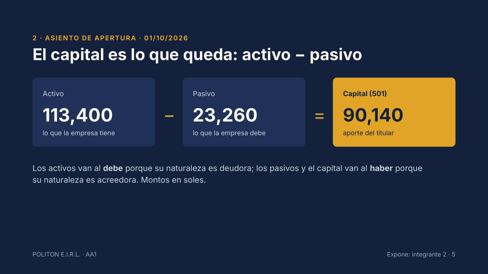
2 · ASIENTO DE APERTURA · 01/10/2026 · El capital es lo que queda: activo − pasivo · Activo · 113,400 · lo que la empresa tiene · − · Pasivo · 23,260 · lo que la empresa debe · = · Capital (501) · 90,140 · aporte del titular · Los activos van al debe porque su naturaleza es deudora; los pasivos y el capital van al haber porque su naturaleza es acreedora. Montos en soles. · POLITON E.I.R.L. · AA1 · Expone: integrante 2 · 5
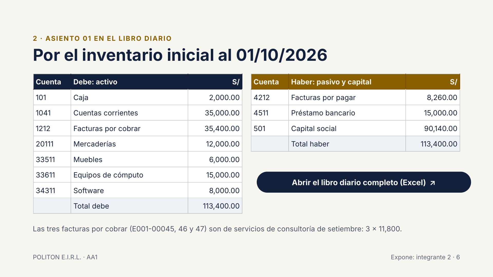
2 · ASIENTO 01 EN EL LIBRO DIARIO · Por el inventario inicial al 01/10/2026 · Las tres facturas por cobrar (E001-00045, 46 y 47) son de servicios de consultoría de setiembre: 3 × 11,800. · POLITON E.I.R.L. · AA1 · Expone: integrante 2 · 6 · Abrir el libro diario completo (Excel) ↗
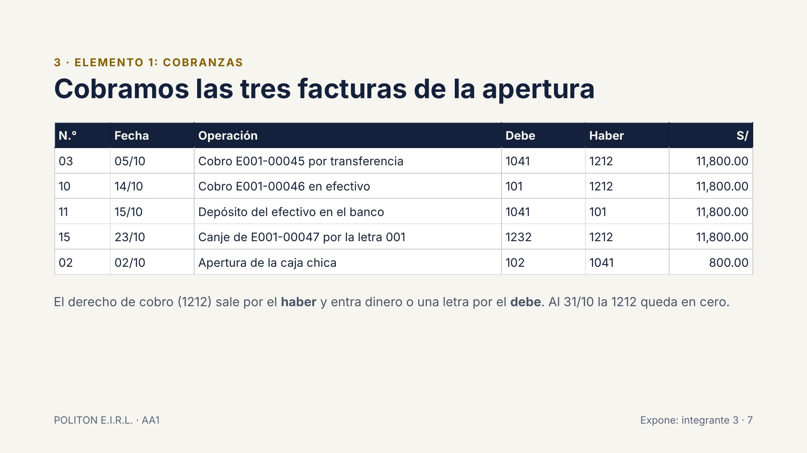
3 · ELEMENTO 1: COBRANZAS · Cobramos las tres facturas de la apertura · El derecho de cobro (1212) sale por el haber y entra dinero o una letra por el debe. Al 31/10 la 1212 queda en cero. · POLITON E.I.R.L. · AA1 · Expone: integrante 3 · 7
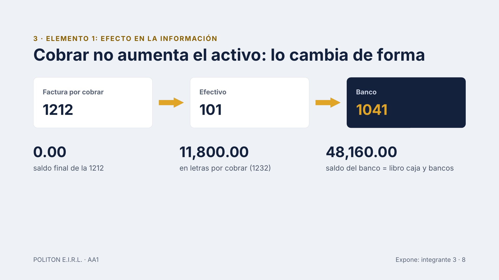
3 · ELEMENTO 1: EFECTO EN LA INFORMACIÓN · Cobrar no aumenta el activo: lo cambia de forma · Factura por cobrar · 1212 · Efectivo · 101 · Banco · 1041 · 0.00 · saldo final de la 1212 · 11,800.00 · en letras por cobrar (1232) · 48,160.00 · saldo del banco = libro caja y bancos · POLITON E.I.R.L. · AA1 · Expone: integrante 3 · 8
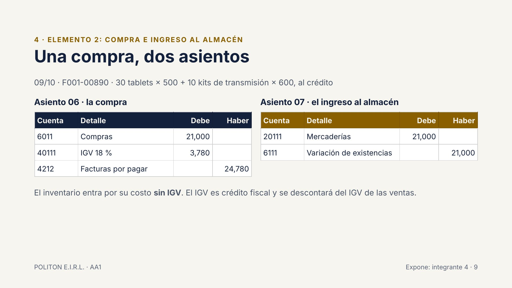
4 · ELEMENTO 2: COMPRA E INGRESO AL ALMACÉN · Una compra, dos asientos · 09/10 · F001-00890 · 30 tablets × 500 + 10 kits de transmisión × 600, al crédito · Asiento 06 · la compra · Asiento 07 · el ingreso al almacén · El inventario entra por su costo sin IGV. El IGV es crédito fiscal y se descontará del IGV de las ventas. · POLITON E.I.R.L. · AA1 · Expone: integrante 4 · 9
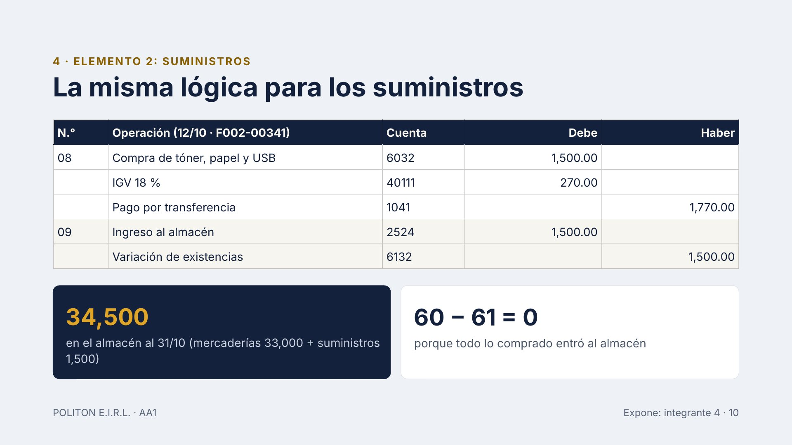
4 · ELEMENTO 2: SUMINISTROS · La misma lógica para los suministros · 34,500 · en el almacén al 31/10 (mercaderías 33,000 + suministros 1,500) · 60 − 61 = 0 · porque todo lo comprado entró al almacén · POLITON E.I.R.L. · AA1 · Expone: integrante 4 · 10
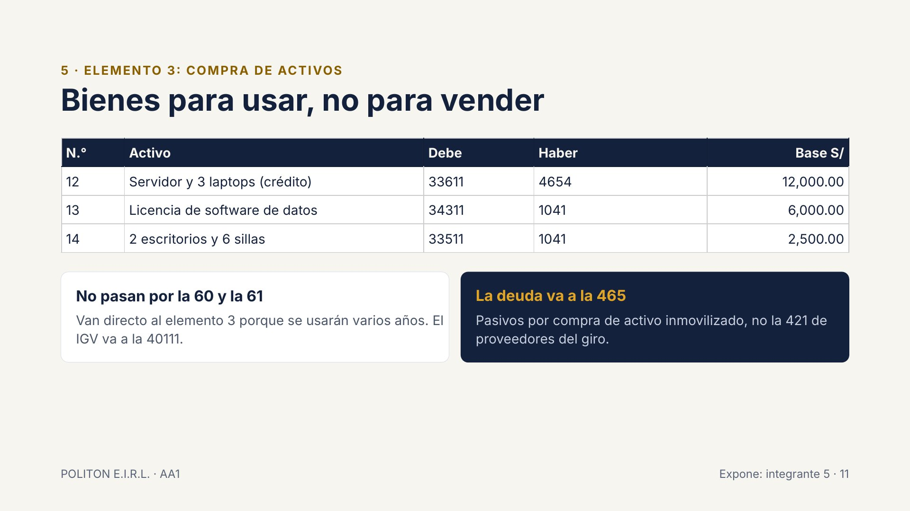
5 · ELEMENTO 3: COMPRA DE ACTIVOS · Bienes para usar, no para vender · No pasan por la 60 y la 61 · Van directo al elemento 3 porque se usarán varios años. El IGV va a la 40111. · La deuda va a la 465 · Pasivos por compra de activo inmovilizado, no la 421 de proveedores del giro. · POLITON E.I.R.L. · AA1 · Expone: integrante 5 · 11
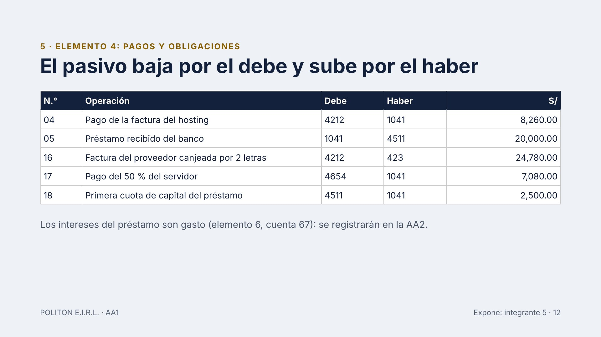
5 · ELEMENTO 4: PAGOS Y OBLIGACIONES · El pasivo baja por el debe y sube por el haber · Los intereses del préstamo son gasto (elemento 6, cuenta 67): se registrarán en la AA2. · POLITON E.I.R.L. · AA1 · Expone: integrante 5 · 12
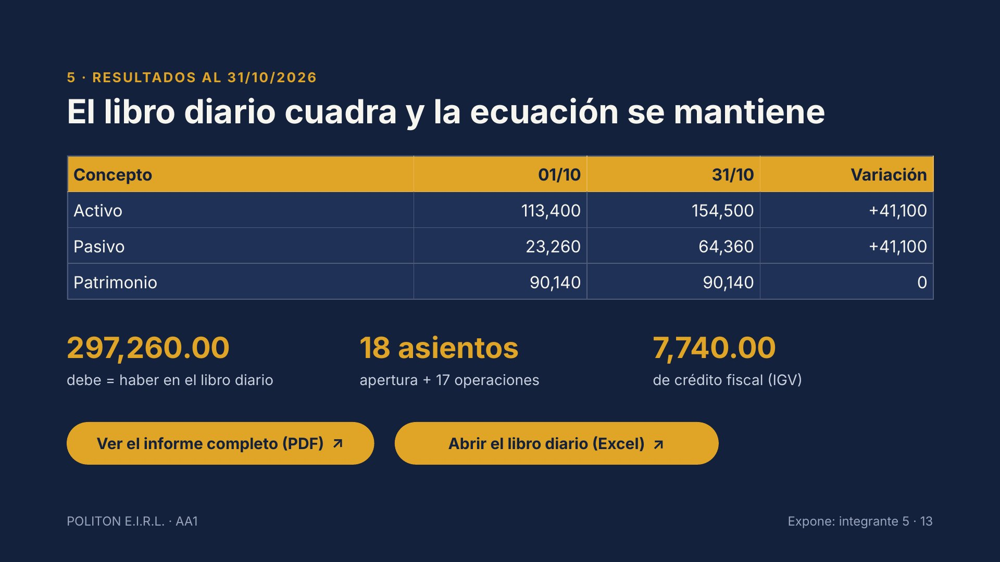
5 · RESULTADOS AL 31/10/2026 · El libro diario cuadra y la ecuación se mantiene · 297,260.00 · debe = haber en el libro diario · 18 asientos · apertura + 17 operaciones · 7,740.00 · de crédito fiscal (IGV) · POLITON E.I.R.L. · AA1 · Expone: integrante 5 · 13 · Ver el informe completo (PDF) ↗ · Abrir el libro diario (Excel) ↗
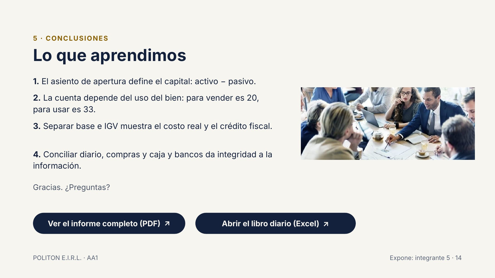
5 · CONCLUSIONES · Lo que aprendimos · 1. El asiento de apertura define el capital: activo − pasivo. · 2. La cuenta depende del uso del bien: para vender es 20, para usar es 33. · 3. Separar base e IGV muestra el costo real y el crédito fiscal. · 4. Conciliar diario, compras y caja y bancos da integridad a la información. · Gracias. ¿Preguntas? · POLITON E.I.R.L. · AA1 · Expone: integrante 5 · 14 · Ver el informe completo (PDF) ↗ · Abrir el libro diario (Excel) ↗
Atajos y puntero
Siguiente
→AvPágEspacio o el botón de avanzar del puntero
Anterior
←RePág o el botón de retroceder del puntero
Videos
1.er clic: el video se abre en grande · 2.º clic: vuelve a la diapositiva · 3.er clic: avanza. K pausa o reanuda.
Pantalla completa
F o F5 · salir con Esc
Pantalla negra
B o .
Presentador
S abre una ventana con notas, siguiente diapositiva y cronómetro